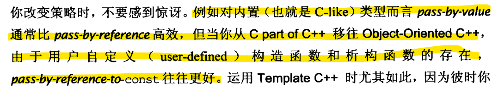

Learning from Effective C++
《Effective C++》读书笔记
00.导读
1.理解下列术语
declaration（声明式）
告诉编译器某个东西的名称和type，但略去细节。
definition（定义式）
提供编译器一些声明式所遗漏的细节。
-
对 对象而言，定义式是编译器为此对象拨内存的地点。
-
对于function或function template而言定义式提供了代码本体。
-
对class和class template而言，定义式列出他们的成员
Initialization（初始化）
给对象赋初值的过程
对于用户自定义类型的对象而言，初始化由构造函数执行
default构造函数（缺省构造函数）：可被调用但不带任何实参者，要不没有参数要不每个参数都有缺省值。
copy构造函数（拷贝构造函数）：用来“以同型对象初始化自我对象”
copy assignment（拷贝复制）操作符：用来“从另一个同型对象中拷贝其值到自我对象”
例子：
1 | class Widget |
copy构造函数与passed by value
copy构造函数定义了一个对象如何 passed by value（以值传递）
例如：
1 | bool hasAcceptableQuality(Widget w); |
01.让自己习惯C++
条款01: 视C++为一个语言联邦
即我们可以将c++看成一个由四种次语言组成的语言联邦，四种次语言分别是
- C
- Object-Oriented C++
- Template C++
- STL
每个次语言都有自己的规约，C++高效编程守则视状况而变化，取决于你用C++的哪一个部分
例如：

条款02：尽量以const，enum，inline替换 #define
本博客所有文章除特别声明外，均采用 CC BY-NC-SA 4.0 许可协议。转载请注明来自 klklkl's blogs！